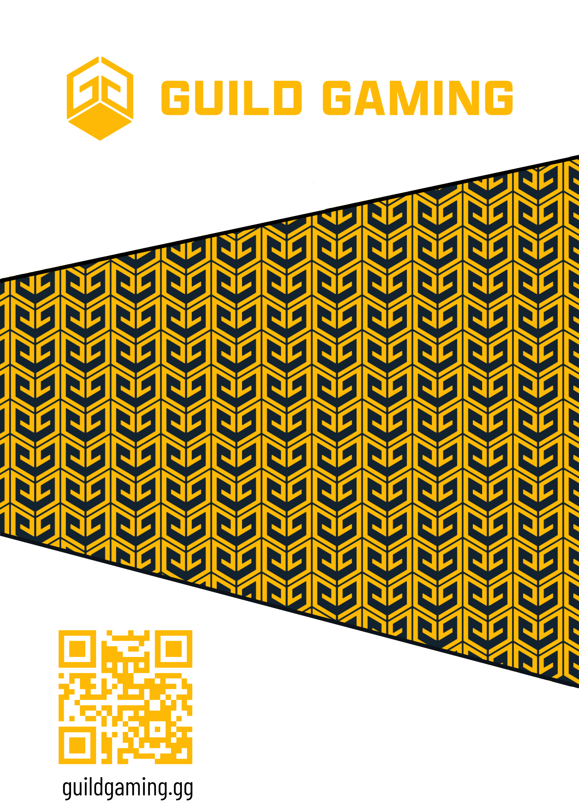

.png)
Company Mission

Dubs Digital Design was created in 2023 after the successful completion of over 40 design certifications from coursera that blossomed into a passion for digital design and entrepenural ambition. What began as a side hustle where I would redesign user experiences for websites, mobile apps, and other digital touchpoints - has started to gain traction into a small business. After graduating in 2026 dubs digital design studio has the potential to grow into something more serious and self sustaining with hard work and dedication. The mission is to sell design solutions to clients or users from 3rd party sites who need help furthering their business goals or personal ambitions via a creative partner.
3DS is your one-stop solution for comprehensive digital designs services that captivate, convert, and leave a lasting impression. 3DS strategizes, not just designs. The studio combines artistic vision with a deep understanding of the user experience (UX) & (UI), web development, branding, and visual communication to deliver effective solutions and services.
- Graphic Design
- UX / UI
- Video Editing
- Social Media Content
Below are previous work examples:



Why Choose 3DS?
The prupose of this brand is to bring a fast DIY, modern, creative edge to the design process where clients can have creative control over unique concepts and design solutions that best fit their needs. I can design and produce a variety of artwork for print and digital marketing campaigns, branded collateral, and other promotional materials using visually stunning presentations that: effectively communicate key concepts, brand messaging, and creative ideas.
- Eye catching: High-Quality, Professional Results Studios utilize the latest industry tools, technologies, and best practices to ensure your digital presence is polished, modern, and high-performing. This ensures a professional image that establishes credibility and trust with your audience.
- Versitile: Cost-Effective and Time-Saving, bringing efficiency, saving you time by managing the project, which allows your company to focus on its core business activities.
- Innovative: Faster Turnaround Times and Project Flexibility W/ streamlined workflows and professional project managers, studios are agile and able to meet tight deadlines without sacrificing quality.
- Conversion Focused: Boosted Engagement and Revenue Skilled design studios don't just make things look good; they focus on functionality and user experience (UX) to increase customer loyalty, encourage word-of-mouth, and turn visitors into customers. A well-designed website or digital product is a crucial marketing investment that can lead to better customer retention
Access to Specialized Expertise and Diverse Talent Working with 3DS gives you access to a team of experts—including UI/UX designers, developers, and creative directors—who bring varied skills to the table. This collaborative, "close-knit" team ensures higher-quality output compared to a single freelancer. I bring consistency in Branding. I provide a critical "external gaze," ensuring that your brand identity remains consistent and effective across all platforms.